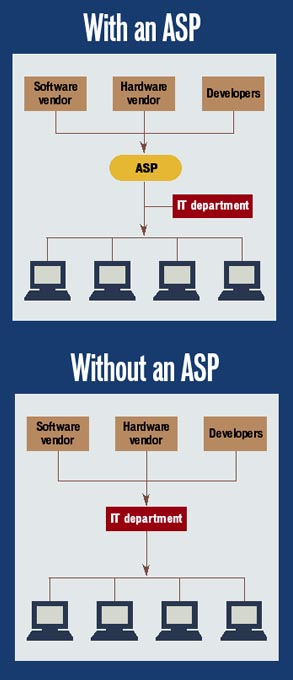

What is an Application Service Provider?
Application service providers offer an outsourcing mechanism whereby they develop, supply and manage application software and hardware for their customers, thus freeing up customers' internal IT resources.
An edited article about the ASPs By Meghan Holohan
SEPTEMBER 11, 2000 written for ComputerWorld magazine.
Organizations use computers to run applications that carry out specific business functions. Typically, organizations spend a serious amount of money to buy software. (Technically, of course, they don't actually buy programs but rather licenses to use them.) Whether it's a PC application that an information technology department has to supply to thousands of users, or a mainframe or server-based program of which it only needs a few copies, the overall cost is still very high - sometimes cripplingly high.
And that's just the beginning. Applications are typically upgraded every 12 to 24 months, and upgrades cost money, regardless of whether software is purchased anew or provided under an annual subscription or maintenance fee.
In the face of high software costs and as an offshoot of the development of two-tier client/ server computing, a new industry has emerged with startling speed: application service providers (ASP).
What Are They?
ASPs deliver a contractual service in which they deploy, host, manage and provide access to an application in a facility located somewhere other than the customer's site.
In essence, the ASP buys and maintains the software (or develops it for the client on a custom basis). It also buys the server hardware and the network and then rents it to the client, typically for a fixed period of time at a specified price.
This arrangement, somewhat akin to leasing a car, means the client doesn't have to bear the up-front capital costs of the hardware and software but instead can pay for their use more gradually.The ASP transmits the application to the user through a dedicated T1, Internet or intranet connection.
Service providers host applications on back-end application/data servers. The back-end servers are usually Unix or Windows NT servers that house various programs.
Such providers usually use a thin client to provide access to applications that can run mostly on a server.
Service providers also use a front end, which provides security, e-mail, Internet access, directions and other services but mostly acts as a connection to the back-end server.
There are three categories of applications that ASPs provide to users, according to research conducted by IDC.
Enterprise applications include those for customer relationship management, enterprise resource planning (ERP), e-commerce, data warehousing and programs to support vertical industries.
Collaborative applications include programs that enable internal operations such as e-mail, groupware, document creation and management messaging.
Finally, ASPs can provide applications for personal use, including games, entertainment software, home-office applications and any other software that can be purchased in a computer store.
The simplest ASP applications are automated, so a user can access information from one Internet portal that will enable him to complete a task such as building a simple e-commerce site.
A more sophisticated ASP can allow a person to tailor information specific to the end user. The person oversees the management of the application and also adds important information about its use.
The most advanced outsourced application is one where providers act as aggregators of multiple services by combining services to meet an individual's needs while implementing the applications and ensuring integration with the existing system.